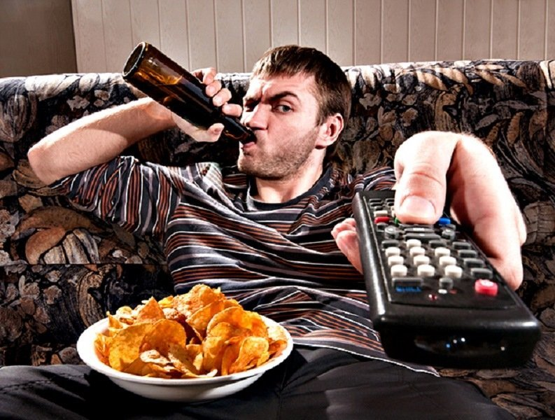
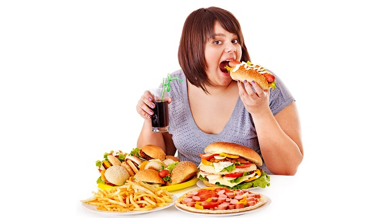
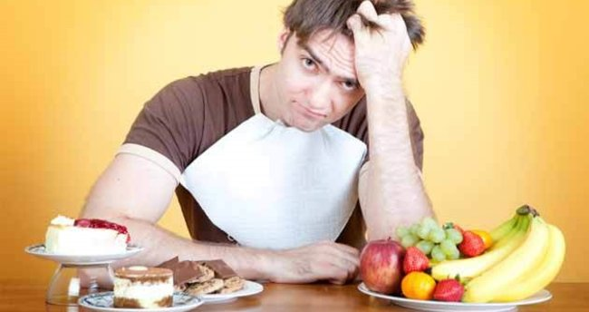
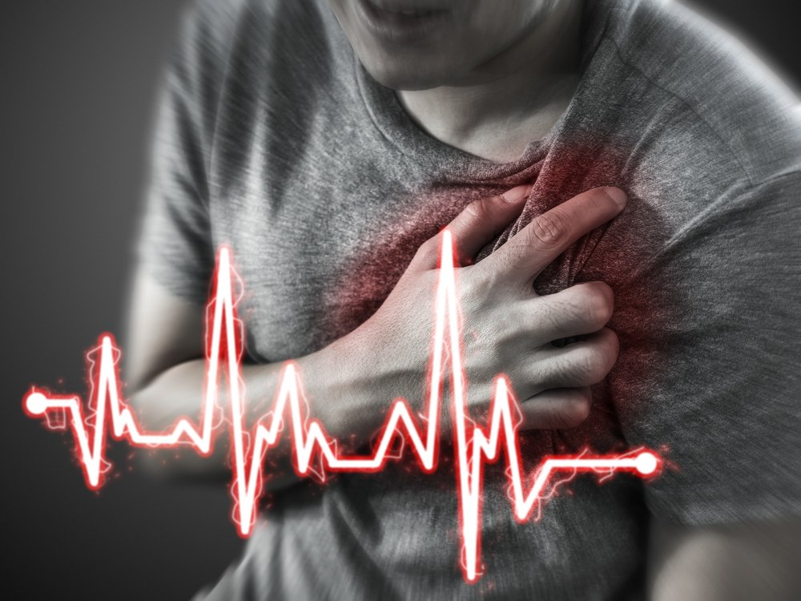

Beslenme düzeni, bir bedenin sağlığını direkt olarak etkiler. Kişinin günlük yaşamında neler tükettiği ve bir besinden ne kadar tükettiği vücutta gerçekleşen tüm reaksiyonları etkileyebilecek güce sahiptir. Doğru ve vücudun ihtiyacı kadar besin tüketimi ile birey kendini birçok hastalığa karşı koruyabilir ve sağlıklı bir yaşam sürebilir. Dengesiz beslenmeyle ise tam tersi bir durum gelişebilir. Dengesiz beslenme, birçok hastalığın temelini oluşturabilir. Genetik olarak aktarılabilen yüksek tansiyon, yüksek kolesterol veya diyabet gibi hastalıklara sahip olma ihtimalini yükseltir.
Dengesiz Beslenme Nedir?

Dengesiz beslenme, her yaş grubunda görülebilen vücudun ihtiyaç duyduğu besin değerlerinin karşılanamadığı veya gerekenden fazla karşılandığı beslenme şeklidir. Karbonhidrat, yağ ve protein dağılımı arasında denge olmayan ve çoğu zaman tek bir besin grubunun ağırlıklı tüketilmesidir. Genellikle, karbonhidrat miktarının fazla olduğu beslenme şekilleri olarak görülür. Bu durum kişilerde kilo artışına ve yağ kütle oranının fazlalaşması ile sonuçlanır
Dengesiz beslenmede tüketilen gıdalar kadar bu gıdaların hangi saatlerde tüketildiği de dikkat çeker. Gece gelen yeme isteği ile günlük tüketilen kalorinin çoğu akşam saatlerinden itibaren tüketilmeye başlanır.
Dengesiz beslenmenin temeli genellikle çocukluk döneminde atılır. Çocukluk döneminde rafine şeker içeriği yüksek besinlerin sık tüketimi, fast food gıdalara hayatın genelinde yer verilmesi veya sadece sevilen kısıtlı miktarda yiyeceğin tüketilmesi gelecekteki dengesiz beslenme alışkanlığının temelini oluşturabilir. Rafine şekerin fazla tüketiminin zararlarını daha detaylı öğrenmek için “Şekerin Zararları” içeriğimize göz atabilirsiniz.
Dengesiz Beslendiğinizi Nasıl Anlarsınız?
Kişiler, dengesiz beslendiğini fark etmeyebilir. Genellikle, bazı göze çarpan durumlar ardından kişiler beslenme düzenlerini sorgulayarak dengesiz beslendiğini fark eder. Kişilerin kan tahlilleri yaptırması ardından karşılaştığı değer eksiklikleri veya fazlalıkları dengesiz beslenmenin en sık karşılaşılan belirtileridir. İnsülin direncinin, kan şekerinin, kolesterol seviyelerinin, trigliserit değerinin, karaciğer enzimlerinin referans değerlerinden yüksek çıkması çoğu zaman dengesiz beslenmenin habercisidir. Vitamin ve mineral değerlerinde eksiklikler ise yine dengesiz beslenmenin habercisi olabilir.
Kan değerleri kadar kişilerin gün içerisindeki enerji miktarları da beslenme şekilleriyle ilgili ipucu verebilir. Bir kişi, yeteri kadar yemek yediğini düşünse dahi kendini zinde hissetmeyebilir. Bu durumun temelinde yeteri kadar besin tüketmemesi yer alabilir veya tüketilen besinlerin sağlıksız kaynaklar olmasına bağlı olarak kişiler yedikleri yiyeceklerden olumsuz yönde etkilenir. Kaslarda güçsüzlük hissetmek, depresyona eğilim, uyku düzeninde bozukluklar, kas ağrıları veya baş ağrıları gibi belirtiler dengesiz beslenmeden kaynaklı oluşabilir. Bu tür semptomların görülmesi ardından kişilerin beslenme düzenine yönelik bir sorgu yapması önerilir. Semptomların şiddetine göre mutlaka doktora danışılmalıdır.
Dengesiz Beslenmenin Neden Olduğu Hastalıklar Nelerdir?
Dengesiz beslenme çeşitli sağlık problemlerine neden olabilir. Beslenmeye bağlı vücudun birçok sisteminde hastalık açığa çıkabilir. Dengesiz beslenmeden en çok etkilenen sistemlerden biri kardiyoloji sistemidir. Trans yağ içeriği yüksek, rafine şekerden zengin beslenme kalp damar sağlığını olumsuz yönde etkiler. Protein tüketiminin fazla olması ise damarlarda tıkanıklıklara neden olabilir. Bu durum; hipertansiyon, anevrizma, felç, inme veya kalp krizi gibi ciddi sağlık problemleriyle sonuçlanabilir.
Dengesiz beslenmeye bağlı olarak kanda artan glikoz miktarı, insülin direnci oluşmasına veya insülin yetersizliğine neden olabilir. Her iki durumun sonucunda kişilerde diyabet hastalığı oluşabilir. Diyabete bağlı olarak kalp damar sağlığı başta olmak üzere yine vücutta birçok sistem olumsuz yönde etkilenir.
Vitamin mineral alımlarında yetersizlik olması halinde, kansızlık, saç dökülmesi, tırnak yapısında değişimler, cilt yapısında değişimler, yorgunluk, anksiyete, uyku düzeninde problemler veya kemik kayıpları gibi ciddi sağlık problemleri görülebilir.
Beslenme düzeninden ağırlıklı olarak etkilenen sistemlerden biri diğeri ise sindirim sistemidir. Tüketilen besinlerin yağ içeriklerine bağlı olarak mide sağlığı olumsuz yönde etkilenebilir. Asitli gıda tüketiminin fazla olması veya alkol tüketimi de mide ve bağırsak sağlığını kötüleştirebilir. Mide ülseri, gastrit, bağırsak tıkanıklığı, kabızlık veya kronik ishal dengesiz beslenmeye bağlı açığa çıkan sindirim sistemi hastalıklarındandır.
Yetişkinlerde Dengesiz Beslenme
İş hayatı ve günlük koşuşturmalar beslenme düzenini olumsuz yönde etkileyerek dengesiz beslenme ile sonuçlanabilir. İşten döndükten sonra hazır yiyeceklere başvurulması veya günün stresini atmak için akşam saatlerinde abur cubur tüketilmesi yetişkinlerde yaygın görülen dengesiz beslenme alışkanlıklarındandır. Bu davranışlara bağlı olarak kişilerde kilo artışı görülebilir.
Bir diğer durum ise günün yoğunluğuna bağlı olarak öğünlerin atlanması ve uzun süreli aç kalınmasıdır. Yetersiz beslenmeye bağlı olarak kişilerde istenmeyen kilo kaybı, kas dokusunda kayıplar ve vitamin mineral eksikleri açığa çıkabilir. Kütle kaybı ve eksikliklere bağlı olarak beyin, bağırsak ve kalp damar sağlığı üzerinde olumsuz durumlar oluşabilir. Kadınlarda adet düzensizliği görülmesi de yaygın karşılaşılan sorunlardan biridir.
Çocuklarda Dengesiz Beslenme
Dengesiz beslenme alışkanlıkları çocukluk döneminde başlar. Çocukların besin ayrımı yapması ve ailenin sadece çocuklarının sevdiği yiyecekleri sunması ilerleyen yıllarda da keskin yemek seçimlerine neden olabilir. Dengesiz beslenmeye bağlı olarak son yıllarda çocuklarda obezite görülme sıklığı artmıştır. Tip 2 diyabet görülme yaşı ise 10 yaş grubuna kadar düşmüştür. Yetersiz beslenme halinde ise çocuklarda büyüme geriliği veya derslerinde başarısızlık gibi bilişsel problemler açığa çıkabilir.
Çocukların yüksek oranda yağ ve şeker içeren besinler tüketmesi, paketli gıdaların taze sebze ve meyveler yerine daha çok tercih edilmesi dengesiz beslenme alışkanlıkları arasında en yaygınıdır. Protein, karbonhidrat ve yağdan dengeli beslenme çocuk beslenmesi için önemli bir başlıktır.
Dengesiz Beslenme ve Saç Dökülmesi

Dengesiz beslenmeye bağlı yeteri kadar B vitamini grubunun ve çinko tüketilmemesi saç dökülmesine neden olabilir. Saç dökülmesine bağlı olarak kişilerde depresyon eğiliminin artması dengesiz beslenmeyi de tetikleyebilir. Bu durum bir kısır döngü oluşturur. Kişilerin bunu fark etmesi halinde bir endokrinoloji uzmanına danışması önerilir. Sağlıklı beslenmeye geçiş yapılırken ciddi oranlarda B vitamini eksikliği görülmesi halinde B vitamini takviyesi kullanılması gerekli olabilir
Dengesiz Beslenme ve Adet Düzensizliği
Dengesiz beslenmeye bağlı olarak vücutta kilo artışı ve hormonsal değişimler görülebilir. Östrojen adet döneminde görev alan temel kadınsal hormonlardan biridir. Östrojen salınımı, vücuttaki yağ miktarından direkt olarak etkilenir. Yağ düzeyi eksik kişilerde yeteri kadar östrojen hormonu salgılanmayabilir. Tam tersi durumlarda ise artan kilo östrojen salınımı miktarını artırarak yine vücutta dengesizlik oluşmasına neden olabilir. Her iki durumda da dengesiz beslenmenin adet düzensizliğine neden olduğu görülür. Vitamin ve mineral alımında yetersizlik olması halinde de adet düzensizliği görülebilir.
Dengesiz beslenmeye bağlı olarak vücutta demir eksikliği oluşabilir. Demir, kan üretiminde görev alan elzem minerallerden biridir. Demir, eksikliğine bağlı annemi görülmesi halinde de regli döneminde düzensizlikler görülebilir.
Dengesiz Beslenme Tansiyonu Yükseltir Mi?

Dengesiz beslenme ve tansiyon arasında ilişki bulunur. Kişinin kendini uzun süre aç bırakması ve bu açlık süresinin ardından ağır yiyecekler ile beslenmesi tansiyon yükselmesine neden olabilir. Tükettiği besinler yoğun tuz içeriğine sahipse ve buna rağmen yeteri kadar su tüketilmiyorsa yine benzer bir şekilde tansiyon yükselebilir. Dengesiz beslenmeye bağlı olarak olumsuz etkilenmiş olan kalp damar sağlığı sonucu olarak da tansiyon yüksekliği görülebilir. Bu gibi durumlarda derhal kardiyoloji bölümüne başvurulmalıdır. Doktorun ve diyetisyen önerileriyle sağlıklı bir beslenme programına geçiş yapılmalıdır.